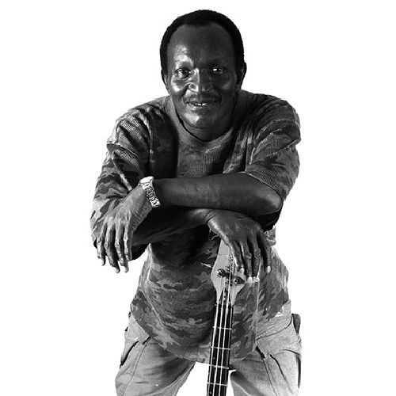

Lloyd Parks
Lloyd Parks is an American R&B/soul singer born in Philadelphia, Pennsylvania, United States. He is an original member of the Philadelphia International Records group, Harold Melvin & the Blue Notes. Lloyd is noted for his high tenor and falsetto vocal leads and harmonies. He is also a founding member of the Epsilons who backed Arthur Conley on his Atco Records hit single "Sweet Soul Music".
Complete Discography & Tracklists (11)
2012 Mental Slavery 🎵 3 Tracks
2014 Lloydie Fix It Back 🎵 12 Tracks
2017 Time A Go Dread 🎵 0 Tracks
No tracks registered.
2018 Meet The People 🎵 0 Tracks
No tracks registered.